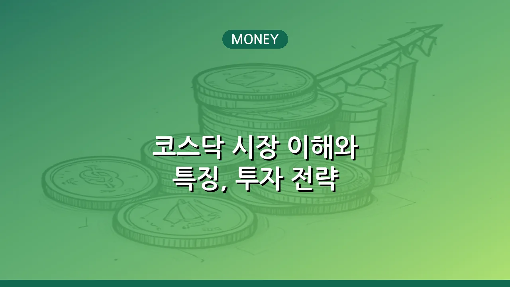

코스닥 시장 이해와 특징, 투자 전략
코스닥(KOSDAQ) 시장은 대한민국의 혁신 기술 기업과 중소·벤처기업들이 자금을 조달하고 성장할 수 있도록 돕는 중요한 증권 시장입니다. 흔히 '미래 성장 산업의 요람'으로 불리며, 높은 성장 잠재력을 지닌 기업들이 상장되어 투자자들에게는 매력적인 기회를 제공하기도 합니다. 하지만 코스닥 시장은 코스피 시장에 비해 변동성이 크고 정보 비대칭이 발생할 가능성도 있어, 투자하기 전에 시장의 특성과 상장 조건, 그리고 현명한 투자 전략을 충분히 이해하는 것이 중요합니다. 이 글에서는 코스닥 시장의 본질부터 주요 특징, 상장 조건, 그리고 투자 시 고려해야 할 사항들을 자세히 다루어 코스닥 시장에 대한 깊이 있는 이해를 돕고자 합니다.
따라서 코스닥 투자를 고려하고 있다면, 각 기업의 사업 모델과 재무 건전성을 면밀히 분석하고, 시장의 흐름과 위험 요소를 종합적으로 판단하는 신중한 접근이 필요합니다. 성장주 투자의 매력과 함께 내재된 위험을 명확히 인지하고, 장기적인 관점에서 분산 투자를 하는 것이 현명한 코스닥 투자로 이어질 수 있습니다.
코스닥 시장이란?
코스닥(KOSDAQ: Korea Securities Dealers Automated Quotation) 시장은 한국거래소(KRX)가 운영하는 대한민국의 증권 시장 중 하나로, 주로 벤처기업, 중소기업, IT, 바이오, 문화 콘텐츠 등 혁신 기술 및 성장 잠재력을 가진 기업들의 자금 조달을 목적으로 합니다. 1996년 미국 나스닥(NASDAQ)을 벤치마킹하여 개설되었으며, 유가증권시장(코스피)에 비해 상장 요건이 비교적 유연하여 성장 초기 단계에 있는 기업들도 시장에 진입할 수 있도록 설계되었습니다.
코스닥 시장은 대한민국의 신성장 동력을 발굴하고 육성하는 데 중요한 역할을 수행해왔습니다. 특히 기술력을 바탕으로 한 스타트업이나 독창적인 사업 모델을 가진 기업들이 코스닥을 통해 대규모 자금을 확보하고 사업을 확장할 수 있는 기회를 얻습니다. 이는 국가 경제의 혁신과 일자리 창출에도 기여하는 바가 큽니다. 투자자들에게는 미래 가치가 기대되는 기업에 투자하여 높은 수익률을 추구할 수 있는 장을 제공하지만, 동시에 높은 성장성만큼이나 높은 변동성과 위험을 내포하고 있기도 합니다.
코스닥 시장의 주요 특징
코스닥 시장은 몇 가지 독특한 특징을 가지고 있어 투자 시 이를 명확히 이해하는 것이 중요합니다.
- 높은 성장 잠재력: 코스닥 상장 기업들은 대부분 기술 개발, 신사업 추진 등으로 높은 성장률을 목표로 합니다. 성공할 경우 주가 상승폭이 클 수 있어 고수익을 기대할 수 있습니다.
- 기술 및 벤처 기업 중심: IT, 바이오, 헬스케어, 게임, 엔터테인먼트 등 미래 성장 산업 분야의 기업들이 주를 이룹니다. 기술력과 아이디어로 승부하는 기업들이 많습니다.
- 상대적으로 높은 변동성: 기업 규모가 코스피 상장사에 비해 작고, 사업 성과가 아직 불확실한 경우가 많아 시장 상황이나 기업 이슈에 따라 주가 변동성이 매우 크게 나타나는 경향이 있습니다.
- 정보 비대칭 위험: 대기업에 비해 기업 정보의 접근성이 낮거나 분석이 어려운 경우가 있어, 개인 투자자 입장에서는 정보 비대칭으로 인한 투자 위험에 노출될 수 있습니다.
- 유동성: 코스피 시장에 비해 거래량이 적은 종목들이 있을 수 있어, 매매 시 원하는 가격에 거래하기 어려울 수 있습니다. 하지만 인기 종목의 경우 거래가 활발히 이루어지기도 합니다.
코스닥 상장 조건 및 절차
코스닥 시장에 상장하기 위한 조건은 코스피 시장에 비해 유연하지만, 기업의 기술력과 성장 잠재력을 철저히 검증하는 과정을 거칩니다. 일반적으로 크게 일반기업 상장, 기술성장기업 상장 특례, 사업모델 특례상장 등의 방식이 있습니다.
정확한 상장 조건은 한국거래소의 공시나 규정집을 통해 확인하는 것이 가장 정확하며, 기준은 시장 상황과 정책에 따라 변경될 수 있습니다. 일반적으로 다음과 같은 사항들을 종합적으로 고려합니다.
- 재무 요건: 매출액, 이익, 자기자본 등 일정 수준 이상의 재무 건전성을 요구하지만, 기술성장기업 특례 상장의 경우 적자 기업이라도 기술력과 성장성을 인정받으면 상장이 가능합니다.
- 기술성 평가: 기술성장기업 특례 상장 시 전문 평가기관으로부터 기술력을 평가받아야 합니다. 이 평가에서 일정 등급 이상을 받아야 합니다.
- 기업 지배구조 및 투명성: 건전한 기업 지배구조를 갖추고 경영의 투명성을 확보해야 합니다.
- 사업의 계속성 및 안정성: 지속적인 사업 영위 가능성과 사업 모델의 안정성을 검토합니다.
상장 절차는 주관사 선정, 상장 예비심사 청구, 증권신고서 제출, 공모 및 청약, 상장 심사 및 최종 승인 등의 단계를 거치게 됩니다. 이 과정은 통상 6개월에서 1년 이상 소요될 수 있습니다. 기업은 상장 준비 단계부터 관련 법규 준수와 정보 공개 의무 이행에 만전을 기해야 합니다.
코스닥과 코스피 시장의 차이점
대한민국의 주요 증권 시장인 코스닥과 코스피는 서로 다른 특성과 역할을 가지고 있습니다. 투자자들은 이 두 시장의 차이점을 명확히 이해하고 자신의 투자 목표와 성향에 맞는 시장을 선택해야 합니다.
| 구분 | 코스피 (KOSPI) | 코스닥 (KOSDAQ) |
|---|---|---|
| 시장 성격 | 대형 우량 기업 중심의 주식 시장 | 중소·벤처, 기술 성장 기업 중심의 주식 시장 |
| 주요 상장 기업 | 전통 산업, 대기업, 안정적인 성장 기업 | IT, 바이오, 문화 콘텐츠 등 신성장 산업 기업 |
| 상장 조건 | 엄격한 재무 요건과 시장 규모 요구 | 기술력, 성장성 중시 (상대적으로 유연한 재무 요건) |
| 변동성 | 상대적으로 낮고 안정적인 경향 | 상대적으로 높고 역동적인 경향 |
| 대표 지수 | 코스피 지수 (KOSPI) | 코스닥 지수 (KOSDAQ) |
| 투자 특징 | 안정적인 수익 추구, 배당 투자 | 고성장, 고위험-고수익 추구 |
코스닥 투자 시 유의사항 및 전략
코스닥 시장은 높은 성장 잠재력을 가지고 있지만, 동시에 그에 상응하는 위험이 따르므로 신중한 접근이 필수적입니다. 성공적인 코스닥 투자를 위한 몇 가지 유의사항과 전략은 다음과 같습니다.
- 철저한 기업 분석: 루머나 단기적인 테마에 휩쓸리지 않고, 기업의 사업 모델, 기술력, 재무제표, 경영진 역량, 경쟁 우위 등을 면밀히 분석해야 합니다. 특히 바이오나 IT 기업의 경우 핵심 기술과 시장 경쟁력을 파악하는 것이 중요합니다.
- 분산 투자: 코스닥 종목은 변동성이 크기 때문에 한두 종목에 집중 투자하기보다는 여러 산업 분야와 기업에 분산 투자하여 위험을 줄이는 것이 현명합니다.
- 장기적인 관점 유지: 단기적인 시세차익보다는 기업의 성장 스토리에 주목하고 장기적인 관점에서 투자하는 것이 코스닥 투자의 성공 확률을 높일 수 있습니다.
- 위험 관리: 투자금액의 일정 부분을 손절매 라인으로 설정하거나, 자신이 감당할 수 있는 범위 내에서만 투자하는 등 철저한 위험 관리가 필요합니다.
- 시장 흐름 및 정책 변화 주시: 코스닥 시장은 정책 변화나 거시 경제 상황에 민감하게 반응할 수 있으므로 관련 뉴스나 정부 정책 등을 꾸준히 모니터링해야 합니다.
코스닥 시장은 대한민국의 혁신 경제를 이끌어갈 미래 기업들의 산실입니다. 잠재력 있는 기업을 발굴하고 함께 성장하는 매력적인 투자처가 될 수 있지만, 높은 수익에는 항상 그에 상응하는 위험이 따른다는 점을 잊지 말아야 합니다. 충분한 학습과 분석, 그리고 현명한 판단으로 성공적인 코스닥 투자를 이어가시길 바랍니다. 투자 전에는 반드시 전문가의 조언을 구하거나 한국거래소 등 공식 기관의 최신 정보를 확인하는 습관을 들이는 것이 좋습니다.
🔗 이 글도 함께 보면 좋아요: 리플(XRP) 코인 특징 활용 전망 투자 유의사항